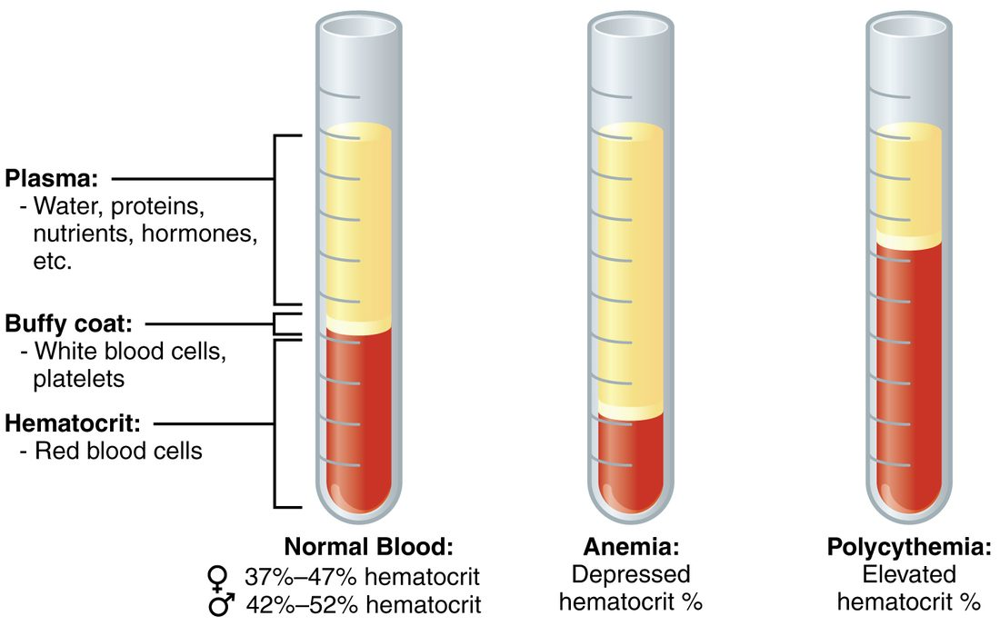

Blood composition and functions
Blood is a connective tissue: about 55% plasma and 45% formed elements (red blood cells, white blood cells and platelets).
Part 1 · Clinical hook
Why this matters
Ana, 19, has been vomiting for three days. Her hematocrit is 54%, well above normal. After two liters of salt solution through a drip, it is 44%. Nobody added or removed a single red blood cell: what changed was her plasma. To read a blood test like hers, you need to know what blood is made of and what each part does.
Part 2 · Foundations
What this builds on
Part 3 · Prerequisite check
Quick check before you start
1. Blood is classed as which kind of tissue?
- Epithelial tissue
- Connective tissue
- Muscle tissue
Show the answer
Blood is a connective tissue: cells scattered in an extracellular matrix. In blood the matrix is a fluid, the plasma.
- Epithelial tissue:
- Correct: Connective tissue:
- Muscle tissue:
2. Where are blood cells made in an adult?
- In the red bone marrow
- In the yellow bone marrow
- In the compact bone of the shaft
Show the answer
Red bone marrow, in the flat bones and the ends of some long bones, is where hematopoiesis happens in adults. Yellow marrow is mostly fat.
- Correct: In the red bone marrow:
- In the yellow bone marrow:
- In the compact bone of the shaft:
3. What is the normal pH range of arterial blood?
- 6.8 to 7.0
- 7.0 to 7.2
- 7.35 to 7.45
Show the answer
Normal arterial blood pH is 7.35–7.45, slightly alkaline. Buffers hold it in this narrow range.
- 6.8 to 7.0:
- 7.0 to 7.2:
- Correct: 7.35 to 7.45:
Part 4 · Anatomy panel
Anatomy

With labels hidden, select a box to reveal its label.
Part 5 · Causal chain
How it works, step by step
- Your liver makes albumin and releases it into the plasma.Albumin becomes the most abundant plasma protein, dissolved in the blood but too large to cross most capillary walls.
- Albumin is held inside the capillaries while water and small solutes cross freely.The plasma has a much larger protein osmotic pressure than the interstitial fluid, and water is drawn toward the blood.
- This osmotic pull opposes the blood pressure pushing fluid out through the capillary walls.Most of the water in plasma stays in the blood, and plasma volume holds steady.
- If a failing liver makes too little albumin, the osmotic pull weakens.More water leaves the blood for the tissues, which swell, and plasma volume falls.
Part 6 · Key ideas
Key ideas
- The hematocrit (hemat- = blood, -crit = to separate) is the percentage of a blood sample's volume made up of red blood cells. Spin a tube of blood and divide the height of the packed red column by the total height, then multiply by 100%; typical values are about 37-47% in women and 42-52% in men.
- Lymphoid stem cells (from Latin lympha = clear water) are the branch of marrow stem cells that gives rise to one family of white blood cells. Myeloid stem cells give rise to red blood cells, platelet-making cells and most other white blood cells. Signaling molecules called colony-stimulating factors bind receptor proteins on marrow cells and make them divide and mature into white blood cells.
Part 7 · Core concept
Core concepts
Part 8 · Misconception
A common mistake
The wrong idea: A high hematocrit means the body is making too many red blood cells.
What actually happens: The hematocrit is a ratio: red cell volume divided by total blood volume. It rises when red cells increase, but it also rises when plasma is lost, as in dehydration, with no change in red cell production. Giving fluid brings it back down within hours. Before you read a hematocrit, ask which part of the ratio moved.
Part 9 · Retrieval check
Check yourself
Anything you miss goes into your review queue.
1. Which plasma protein is the most abundant?
- Fibrinogen
- Albumin
- Gamma globulin
- Beta globulin
Show the answer
Albumin makes up about 55–60% of plasma protein. It is made by the liver.
- Fibrinogen: Fibrinogen is the smallest of the three main groups, about 4–7% of plasma protein.
- Correct: Albumin: Correct. Albumin is more than half of all plasma protein.
- Gamma globulin: Gamma globulins are one part of the globulins, which together make up about 35–38%.
- Beta globulin: Beta globulins are another part of the globulins, and they are far less abundant than albumin.
2. A spun blood sample is 50 mm tall. The packed red column is 20 mm tall. What is the hematocrit?
- 20%
- 30%
- 40%
- 60%
Show the answer
Hematocrit = red column ÷ whole column × 100% = 20 ÷ 50 × 100% = 40%.
- 20%: 20 is the height of the red column in millimeters, not a percentage of the whole.
- 30%: 30 is the height of the plasma layer (50 − 20), not a percentage.
- Correct: 40%: Correct. 20 ÷ 50 = 0.40, which is 40%.
- 60%: 60% is the share of plasma (30 ÷ 50). The hematocrit is the share of red cells.
3. A runner loses 2 L of sweat on a hot day and drinks nothing. Sweat comes from plasma water; no red blood cells are lost. Predict the change in each variable in his blood.
| Variable | Change |
|---|---|
| Plasma volume | — |
| Red blood cell volume | — |
| Hematocrit | — |
| Plasma protein concentration | — |
| Blood viscosity | — |
Show the answer
Losing plasma water leaves the cells and proteins in a smaller volume. Every concentration and ratio that has red cells or proteins on top rises, including the hematocrit, even though the body has not made a single extra red blood cell.
- Plasma volume: down. Sweat is made from water drawn out of the plasma, so plasma volume shrinks.
- Red blood cell volume: no change. No red cells leave the body in sweat, and new ones take days to make, so the red cell volume is unchanged.
- Hematocrit: up. The same red cell volume now sits in a smaller total blood volume, so red cells are a larger fraction of it.
- Plasma protein concentration: up. The proteins stay in the blood while water leaves, so the same amount of protein is dissolved in less water.
- Blood viscosity: up. Viscosity depends mostly on the hematocrit, which has risen, so the blood is thicker.
4. A lab lets one blood sample clot in a plain tube and spins another that contains a chemical that stops clotting. The fluid from the first tube lacks one protein that the fluid from the second tube has. Which protein?
- Albumin
- Alpha globulin
- Fibrinogen
- Gamma globulin
Show the answer
The first tube gives serum; the second gives plasma. Serum is plasma without its clotting proteins, because they were used up building the clot. Fibrinogen is the main one.
- Albumin: Albumin does not take part in clotting, so it is present in both serum and plasma.
- Alpha globulin: Alpha globulins are transport proteins, and they stay in serum.
- Correct: Fibrinogen: Correct. Fibrinogen is turned into the threads of the clot, so serum has none.
- Gamma globulin: Gamma globulins are immune proteins. They remain in serum, which is why many immune tests use serum.
5. Ana, 19, arrives dehydrated after three days of vomiting. Her hematocrit is 54%. After 2 L of salt solution by drip, it is 44% a few hours later. What best explains the fall?
- Her marrow slowed red blood cell production overnight
- The salt solution destroyed some of her red blood cells
- Her plasma volume rose, diluting her red cells
- Her kidneys removed the extra red blood cells
Show the answer
Hematocrit is red cell volume divided by total blood volume. Dehydration had shrunk her plasma, raising the ratio. The drip restored plasma volume, so the same red cells became a smaller share of a larger total.
- Her marrow slowed red blood cell production overnight: Red blood cells circulate for about 120 days, so slowing production for a few hours would barely change their number.
- The salt solution destroyed some of her red blood cells: A salt solution given in the right concentration does not burst red blood cells. Her red cell volume is unchanged.
- Correct: Her plasma volume rose, diluting her red cells: Correct. The denominator of the ratio grew; the numerator stayed the same.
- Her kidneys removed the extra red blood cells: The kidneys filter plasma, not whole cells. They do not remove red blood cells from the blood.
6. After a course of chemotherapy, which kills dividing cells in the marrow, a patient's white blood cell count is very low. Her doctor prescribes a drug to speed its recovery. Which growth factor is that drug most likely to be?
- Erythropoietin, from the kidneys
- Thrombopoietin
- Albumin
- A colony-stimulating factor
Show the answer
Colony-stimulating factors drive marrow precursors to make white blood cells. Given as a drug after chemotherapy, one speeds the recovery of the white cell count.
- Erythropoietin, from the kidneys: Erythropoietin speeds red blood cell production, not white.
- Thrombopoietin: Thrombopoietin drives megakaryocytes and platelet production.
- Albumin: Albumin is a plasma protein that holds water in the blood. It is not a growth factor.
- Correct: A colony-stimulating factor: Correct. Colony-stimulating factors steer marrow cells toward white blood cells.
7. A student says the blood in her arm veins is blue until it meets oxygen outside the body. What is the best reply?
- She is right: venous blood is blue and turns red on contact with air
- It is dark red; veins look blue because of how skin handles light
- Venous blood is purple because it carries carbon dioxide
- Venous blood is blue in the limbs and red in the core
Show the answer
Blood is always red. Red blood cells full of oxygen make it bright scarlet; with less oxygen it is dark red. Veins look blue through skin because skin scatters and absorbs red and blue light differently, not because the blood is blue.
- She is right: venous blood is blue and turns red on contact with air: Blood drawn into a sealed tube, never meeting air, is still dark red. It is not blue inside the body.
- Correct: It is dark red; veins look blue because of how skin handles light: Correct. The color of a vein seen through skin is an effect of light in the skin.
- Venous blood is purple because it carries carbon dioxide: Carbon dioxide does not turn blood purple. Blood with less oxygen is darker red.
- Venous blood is blue in the limbs and red in the core: Blood in the limbs and the core is the same color for the same oxygen content. Blood is never blue.
Part 10 · Summary
Summary
Blood is a connective tissue: about 55% plasma and 45% formed elements (red blood cells, white blood cells and platelets). Plasma is about 92% water carrying proteins, electrolytes, nutrients, wastes, gases and hormones. The plasma proteins are albumin (most abundant; made by the liver; its osmotic pull holds water in the blood and it carries poorly soluble substances), globulins (transport proteins, and gamma globulins made by white blood cells for immune defense) and fibrinogen (forms the threads of a clot). Serum is plasma without its clotting proteins. The hematocrit, or packed cell volume, is the percentage of blood volume that is red blood cells (about 37–47% in women, 42–52% in men); it changes with red cell volume or plasma volume. All formed elements come from hematopoietic stem cells in red bone marrow, through myeloid and lymphoid stem cells, steered by growth factors such as erythropoietin, thrombopoietin and colony-stimulating factors. Blood transports, regulates pH, temperature and fluid balance, and protects against blood loss and infection.
Part 11 · Up next
What comes next
Part 12 · Connections